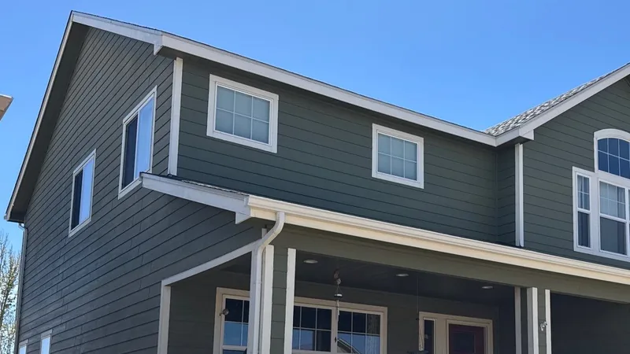
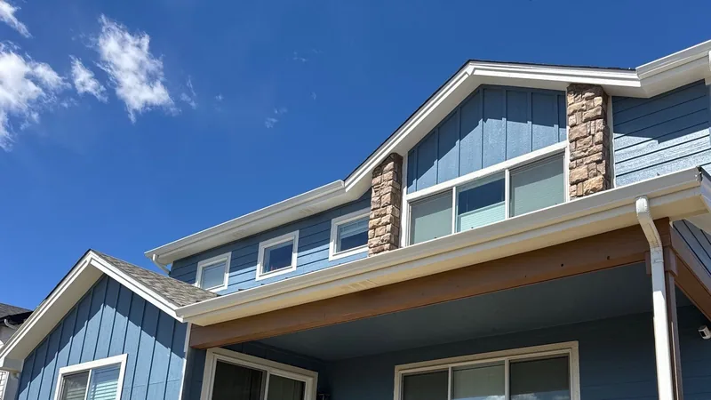

Other services in Knoxville, TN
Siding for Knoxville homes
Siding is the other half of what keeps the weather out. If yours is cracked, warped or soft at the bottom, we'll replace it and tie it into the roof and gutters so the whole outside works together.

- Family roofing company. Since 2018.
- 4,000+ projects documented. On record, job by job.
- Free inspections. Written, line-by-line prices.
- 24-hour emergency line. Leaks and storm damage, any hour.
- All of East Tennessee. Twelve counties, one phone number.
Signs your siding is done
- Cracked, loose or missing panels after a storm.
- Warping or bubbling, often on the sunny side.
- Soft spots along the bottom rows and under windows.
- Paint that peels again a year after you painted.
- Mildew that keeps coming back from behind.
Only one or two of those? It may be a repair. Read Repair or replace siding?

Repair or replace?
A few cracked panels on one wall, with sound sheathing behind them, is a repair. Soft wood behind the siding, damage on several walls, or a color that can't be matched any more points to new siding on that wall or the whole house. You'll get the repair and the replacement priced side by side.
Three materials we install
- Vinyl. The most common choice around Knoxville. Low cost, low upkeep, a long list of colors. It can crack in a hard freeze and warp near a grill.
- Fiber cement. Heavier and harder to dent, holds paint well, won't burn. It costs more and takes longer to put up.
- Engineered wood. The look of painted lap siding at less weight than fiber cement. It needs paint upkeep, like wood.
Twelve looks, and what each comes in
| Profile | What you see from the street | Comes in |
|---|---|---|
| Clapboard | Long, narrow boards, each lapped over the one below | Vinyl, fiber cement, engineered wood |
| Dutch lap | Lap boards with a groove cut along the top edge, so each row throws a deeper shadow | Vinyl |
| Beaded | Lap boards with a rounded bead along the bottom edge, an older look | Vinyl, fiber cement |
| Board and batten | Wide vertical boards with thin strips over the joints, common on gables and farmhouses | Vinyl, fiber cement, engineered wood |
| Solid soffit | Flat panels under the eaves | Vinyl, fiber cement, engineered wood |
| Vented soffit | The same panels with small perforations, so the attic can draw air | Vinyl, fiber cement, engineered wood |
| Insulated vinyl | Lap vinyl with a foam backing, stiffer and quieter on the wall | Vinyl |
| Trim and accents | Corner boards, window surrounds, frieze boards and fascia wrap | Vinyl, fiber cement, engineered wood |
| Traditional shake | Even rows of squared shingles, the look of sawn cedar | Vinyl, fiber cement, engineered wood |
| Scallop | Rounded shingle ends, usually in a gable peak | Vinyl |
| Hand-split shake | Rough, uneven shingle edges like split cedar | Vinyl |
| Cape Cod shingle | Narrow, tidy shingle rows in long courses, a coastal cottage look | Vinyl, fiber cement |
Most houses mix two or three: lap on the walls, board and batten or shake in the gables, and trim that ties them together. More in Siding styles, from lap to board and batten.
What a siding job includes
The old siding comes off and the wall sheathing gets checked. House wrap goes on, then flashing around each window and door, then trim and siding. While we're up there we look at the gutters and the roof edge, because water coming off the roof is what usually ruins siding.

What moves the price
- The material. Vinyl costs least, fiber cement most, engineered wood in between.
- The wall area, and how many windows, doors and corners break it up.
- Soft sheathing found when the old siding comes off.
- Tall gables that need staging instead of ladders.
- Trim, soffit and fascia done at the same time.
Your written price shows each of those on its own line.
How long it takes, and the warranty
One wall goes quickly. A whole house takes longer, and fiber cement longer still, because it's heavier and slower to cut. Rain slows the house-wrap stage more than the siding itself.
Siding carries its maker's warranty, which depends on the product named on your price. Ask for our written workmanship terms with it. To see finished siding and roofs from our crews, browse our projects.
Roof and siding together
If both are near the end, doing them together usually costs less than two separate jobs: one setup, one cleanup, and the flashing where roof meets wall done once. You also get to pick colors as a set. See Matching roof, siding and trim colors.
Questions about siding
Can you match my old vinyl?
Sometimes. Vinyl colors and profiles get discontinued, and the panels on your house have faded in the sun, so a fresh panel from the same line can look a shade off. Bring us a piece, like a scrap from the garage or one pulled from behind a downspout, and we'll look for the closest profile and color. If the match is poor, the usual fix is to redo that whole wall, so the change lands at a corner where the eye doesn't catch it.
Does siding need a permit?
It depends on where you live. The City of Knoxville, Farragut, Maryville, Oak Ridge and the counties set their own rules. We check for your address, and if a permit is needed, we pull it. If you're in an HOA, the covenants may also set siding colors and materials, so find your review form early.
Will my HOA have a say in my roof?
In a lot of Knoxville-area subdivisions, yes. Many covenants set rules on shingle color and sometimes material, and the HOA wants its review form signed off before work starts. We'll fill in the manufacturer, line and color for the form, and material gets ordered only after the HOA says yes in writing.
Can I pay for my roof over time?
Ask us. We don't offer a lender program today, so tell us when you book that you'd like to spread out the cost. You'll get a written price for your bank or credit union. Common choices are a home improvement loan, a credit union personal loan, or a home equity line of credit.
Can I just text you a photo?
Please do. Text a photo of the problem (the ceiling stain, the shingles in your yard, the spot you can see from the street) to (865) 830-8126 with your address. We'll text back what it looks like and whether someone needs to come out. It's the fastest way to find out if a problem is small.
Get a free siding estimate
Four boxes. We'll call you back to pick a time.
Rather talk? Call (865) 830-8126. Rather text? Send a photo.